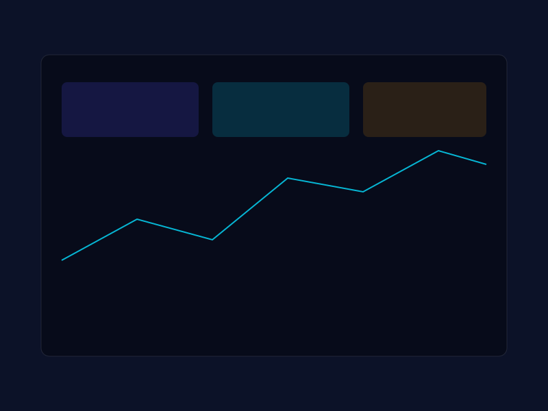

Unified Operations Visibility
Single dashboard across data centers, networks, cloud, applications, and IoT — one pane for the entire estate.
AI-Powered Enterprise Management
Apricus Enterprise Management System is an AI-native platform spanning infrastructure, applications, and microservices — scalable to enterprise-grade deployments, hybrid and cloud-native ready, with future-ready security and SOAR integrations.
Request EMS Demo
ITOps
Single dashboard across data centers, networks, cloud, applications, and IoT — one pane for the entire estate.
Up to 90% reduction in alert noise with faster incident identification and prioritization.
Faster resolution, reduced downtime, and improved service experience for users and citizens alike.
Predict server and network failures before they impact production workloads.
24/7 operational continuity with reduced MTTR and improved SLA adherence.
Reduce infrastructure spend through better utilization of existing assets.
Faster identification of service degradation and improved user satisfaction.
Role-based dashboards for Secretaries, CIOs, and command centers — insight without noise.
Cyber Security
Detection, visibility, and automated response — built for SOC teams that need signal, speed, and orchestration.
Ingests high volumes of multi-format logs (Syslog, JSON, CEF) with real-time indexing, search, and high EPS scalability.
Rule-based detection, multi-event correlation, and mapping to the MITRE ATT&CK framework.
Machine learning for behavioral baselining of users and entities — insider threats, anomalous logins, privilege escalation, and data exfiltration with dynamic risk scoring.
STIX/TAXII-based threat feeds enrich events with Indicators of Compromise (IOC) context and reputation scoring.
Executes predefined, customizable workflows via a low-code playbook builder.
Integrates with firewalls, EDR, IAM, and cloud platforms to block malicious IPs, disable accounts, and isolate endpoints in real time.
Integrated workspaces for tracking incidents, SOC collaboration, and gathering forensic evidence.
AI-driven alert triaging, automated classification, and self-executing remediation to lower MTTD and MTTR.
Request a tailored demo — we will walk through observability, correlation, and automation against your use cases.
Request EMS Demo